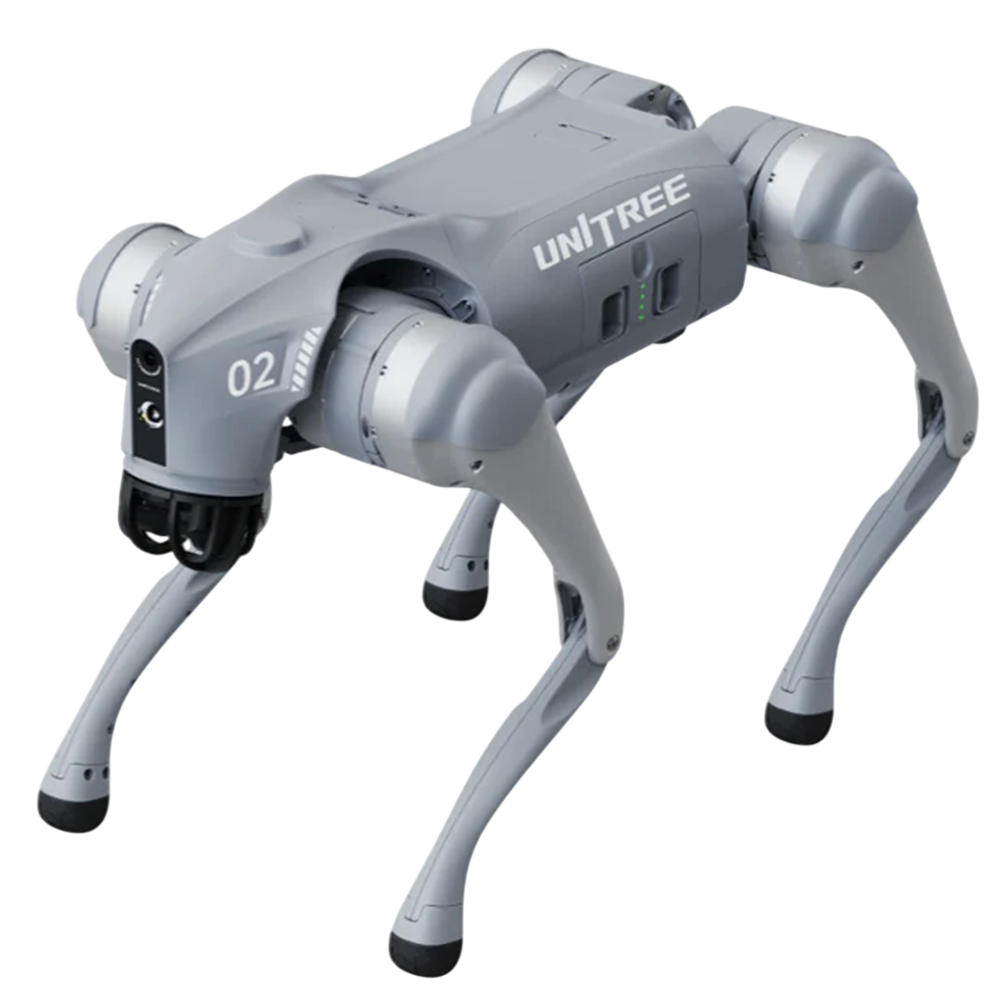

Things That
Don't Exist
An informal discussion prompted by our work on unverifiable references
A claim can sound perfectly plausible.
A claim can sound perfectly plausible.

A claim can sound perfectly plausible.
False claims can enter
the scholarly record.
Fabricated evidence
Data or samples can be invented, substituted or manipulated.
SCIgen
Plausible-looking scientific papers can be generated without meaningful science underneath.
Misleading citations
References can be real but inaccurate, distorted or used to support claims they do not support.
AI did not invent unreliable scholarship. It changes the speed and cost at which plausible-looking claims can be produced.
Does this paper exist?
Artificial intelligence and educational transformation: A systematic review.
Journal of Educational Technology, 18(3), 214–229.
doi:10.2916.WP/562679
It looks like a scholarly object.
actually entered the
published literature?
Not “69 fraudulent papers.” Not necessarily “hallucinated references.” Unverifiable after automated checks and manual review.
Can we automate
some of the checking?
The goal is not to declare “fake”.
It is to find things that need checking.
“Things that don't exist”
are a broader problem.
More papers. More claims.
And some flagged falsifications turned out to be wrong. Verification itself requires verification.
Source: https://huggingface.co/blog/icml-2026-open-reproductions
verify every claim?
everything…
And who should be responsible for doing it?
A few things behind the discussion
Our paper
Han et al. — “Phantom citations: An empirical study of non-existent
and unverifiable references in scholarly literature.”
Open reproduction
Hugging Face / community report — “What We Learned by Reproducing
2,200 Papers from ICML.”
Research-integrity examples
ScienceAlert — Maria Cristina Miron Elqutub and fabricated blood samples.
Retraction Watch — Bharat Aggarwal and retracted papers.
AI statement
ChatGPT helped us polish the text and synthesise these HTML slides.